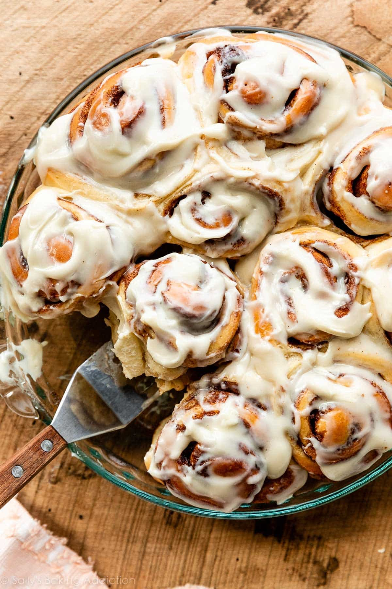

Perfect Cinnamon Rolls
Home Page

From sallys baking These are classic, homestyle cinnamon rolls. It took me lots of recipe testing trial-and-error to develop quick cinnamon rolls that maintain all the flavor and texture of traditional overnight cinnamon rolls. But THIS. IS. IT. And I promise, making these easy cinnamon rolls is 100x more satisfying than that feeling you get from popping open a store-bought can of ready-to-bake rolls.
Ingrediants
- 2 and 3/4 cups all-purpose flour (spooned and leveled)
- 1/4 cup granulated sugar
- 1/2 teaspoon salt
- 3/4 cup whole milk
- 3 tablespoons unsalted butter
- 2 and 1/4 teaspoons Platinum Yeast
- One large egg, at room temp
- (and a lot more that will take a long time to list out)
Steps
- Make the dough
- Combine wet ingrediants and mix
- Knead dough and let rest
- Fill the rolls
- Let Rise
- Bake the Rolls
- Make the Icing
- Eat and Store